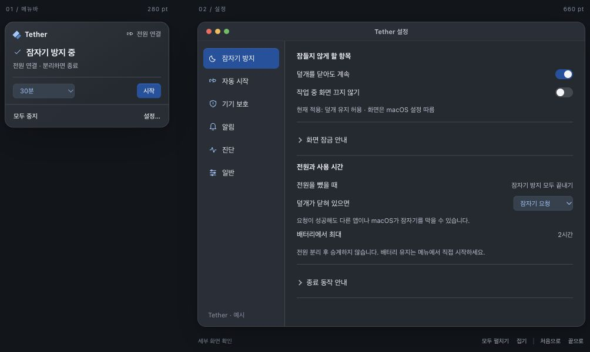

Keepresso
상태와 토글을 한곳에
 이미지를 불러오지 못했습니다. 원본 링크에서 확인하세요.
이미지를 불러오지 못했습니다. 원본 링크에서 확인하세요.화면에서 보이는 것
남은 시간, 트리거 재개, 덮개 토글이 메뉴 안에 있습니다. 주황색으로 조작 지점을 강조합니다.
차용
상태 바로 옆에서 조작하기
배터리 슬라이더와 여러 푸터 항목까지 있어 전체 메뉴가 길어집니다. 위 이미지 안에서 스크롤해 볼 수 있습니다.
TETHER / INTERFACE STUDY
디자인 제안 · 앱 미적용실제 화면에서 좋은 패턴을 고르고,
Tether에 필요한 만큼 조합합니다.
다른 앱은 공식 공개 스크린샷입니다. 촬영 버전은 확인되지 않았으며, 현재 설치 버전의 동작 검증 자료는 아닙니다.
01 / MENU BAR
기본 조작의 위치와
한 번에 보이는 정보량을 비교합니다.
상태와 토글을 한곳에
이미지를 불러오지 못했습니다. 원본 링크에서 확인하세요.화면에서 보이는 것
남은 시간, 트리거 재개, 덮개 토글이 메뉴 안에 있습니다. 주황색으로 조작 지점을 강조합니다.
상태 바로 옆에서 조작하기
배터리 슬라이더와 여러 푸터 항목까지 있어 전체 메뉴가 길어집니다. 위 이미지 안에서 스크롤해 볼 수 있습니다.
진행 중인 세션을 중심으로
 이미지를 불러오지 못했습니다. 원본 링크에서 확인하세요.
이미지를 불러오지 못했습니다. 원본 링크에서 확인하세요.화면에서 보이는 것
현재 세션의 상세·옵션·종료를 한 덩어리로 묶고, 새 세션 시작을 아래에서 분리합니다.
현재 상태와 종료 동작을 붙이기
시간과 추가 기능은 하위 메뉴로 확장됩니다. Tether의 자주 쓰는 시간은 첫 화면에 남깁니다.
시간 선택이 곧 시작점
 이미지를 불러오지 못했습니다. 원본 링크에서 확인하세요.
이미지를 불러오지 못했습니다. 원본 링크에서 확인하세요.화면에서 보이는 것
시간 목록이 메뉴의 중심입니다. 익숙한 macOS 메뉴 구조로 선택지가 바로 드러납니다.
시간 선택을 한눈에 보이게 하기
시간 항목이 8개여서 목록 길이가 늘어납니다. Tether는 30분·1시간·2시간을 먼저 제시합니다.
Tether에 가져올 조합 현재 상태 + 가까운 종료·연장 + 기본 토글 + 짧은 시간 선택.
메뉴 안에서 기본 조작 완료02 / PREFERENCES
탭의 개수보다
한 화면에서 읽히는 행의 구조에 주목합니다.
상단 탭 · 섹션 카드 · 좌측 라벨과 우측 조작
 이미지를 불러오지 못했습니다. 원본 링크에서 확인하세요.
이미지를 불러오지 못했습니다. 원본 링크에서 확인하세요.관련 항목을 한 묶음의 행으로 정리
이 저장소 화면의 탭은 6개이고 섹션 사이 여백도 큽니다. 행 정렬은 참고하되, Tether의 창 크기와 탭 수는 별도로 줄입니다.

상단 아이콘 탭 · 조건을 비교하기 쉬운 표
 이미지를 불러오지 못했습니다. 원본 링크에서 확인하세요.
이미지를 불러오지 못했습니다. 원본 링크에서 확인하세요.조건은 한 행씩, 편집은 설정 안에서
상단 아이콘은 8개이고 조건 표의 정보가 촘촘합니다. Tether는 3~4개 탭과 접을 수 있는 설명으로 정리합니다.
App Store 공식 홍보 이미지 · 파일명 2021 · 촬영 버전 미확인
Lungo 설정은 이번에 확보한 공식 자료만으로 같은 수준의 화면 비교가 어려워, 메뉴 비교에만 포함했습니다.
03 / TETHER, RECOMPOSED

자주 하는 조작은 바로 보이고, 조건·보호 기준은 설정 안에 남습니다.
전원 분리 후 타이머를 이어가지 않습니다. 배터리에서 유지하려면 메뉴에서 직접 시작합니다. 잠자기 요청 뒤에도 다른 앱이나 macOS가 잠자기를 막을 수 있습니다.
기존 옵션을 삭제하지 않고 네 탭으로 재배치합니다. 자동 기본 설정·조건 편집은 ‘자동 시작’, 보호 하한·알림은 ‘보호·알림’, 일반·진단은 ‘앱’에.
긴 설명은 접고, 보호 중지·권한 안내는 필요한 상태에서만 표시합니다.
기본 토글을 메뉴로 가져와
설정까지 이동하는 횟수를 줄입니다.
현재 타이머와 종료·연장을 묶어
지금 할 수 있는 조작을 분명히 합니다.
시간 선택은 첫 화면에 두되
자주 쓰는 세 가지로 압축합니다.
04 / YOUR COMBINATION
아래 선택은 조합 요약만 바꿉니다.
검토 후 커스텀할 후보를 정하는 단계입니다.
이 페이지의 선택은 브라우저 안에서만 표시됩니다. 위 와이어프레임은 추천 조합 예시이며, 선택을 앱이나 기존 시안에 즉시 적용하지 않습니다.